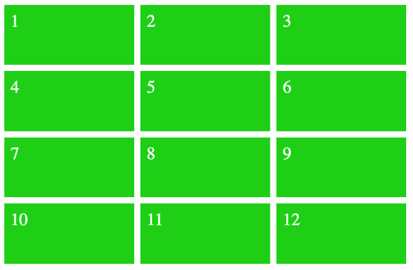
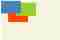

Вёрстка на Grid в CSS. Полное руководство и справочник
Mar 11, 2018 · 29 min read
Эта статья показывает, как работает эта сравнительно новая технология, именно работает, а не только описание свойств с поверхностными примерами.
Сама статья является адаптивным дополненным переводом CSS Grid Tutorial
Как это работает?
Создаем Grid
Создаем шаблон сайта с CSS Grid
Создаем адаптивный Grid
Явные и неявные гриды
Расстановка Grid-элементов
Создаем вложенный грид
Формы с авто-размещением
CSS Grid выравнивание
Наложение Grid элементов
Абсолютное позиционирование и гриды
Инспектор Грид
Grid модуль в CSS был разработан CSS Working Group для того, чтобы предоставить наилучший способ создания шаблонов в CSS. Он попал в Candidate Recommendation в феврале 2017 года, а основные бразуеры начали его поддержку в марте 2017 года.
CSS Grid скоро станет неотъемлемой частью набора инструментов любого фронт-энд разработчика. И если вы один из них, то вам придется учить CSS Grid — который практически определенно станет неосопоримым умением для любой позиции во фронтэнд разработке.
С этим мощным функционалом и интуитивно понятным синтаксисом, шаблоны на grid будут несомненно менять то, на чем создается веб.
CSS Grid это новая модель шаблона, оптимизированная для двумерных шаблонов. Это идеальная модель для шаблонов сайтов, форм, галерей и всего, что требует точного и отзывчивого позиционирования.
С развитием веба в последние годы, разработка шаблонов веб-сайтов стала всё затруднительнее. В ранние годы веба, HTML таблицы зачастую использовались для многоколоночных шаблонов, форм и т.д. Но у этого метода есть свои недостатки. Это означает то, что представление должно было быть сделано на уровне разметки, таким образом не было различий между представлением и контентом. По-факту, таблицы были созданы для того, чтобы содержать табличные данные, а не для создания шаблонов. И не касаясь семантических проблем, табличные шаблоны не созданы для респонсив дизайна.
Флоаты в конечном итоге заменили табличные шаблоны как всеобще приемлемый и рекомендованный метод создания шаблонов, так как он позволяет нам позиционировать элементы вне зависимости от разметки. Тем не менее, пока этот метод считался значительным улучшением на фоне табличной верстки, у него тоже были свои ограничения. Флоаты в основном были разработаны для шаблонов документов и они не были подходящими для сложных шаблонов приложений, которые сейчас распространены в сети. Флоат элементы сложно контролировать, особенно на девайсах и viewport разных размеров. Это привело к различным гридободобным хакам, которые стали нормой, большинство из них требовалась дополнительная разметка, которая отвлекала от всей концепции разделения контента. Таким образом CSS Working Group было в поиске решения получше.
CSS Grid модель рассматривает эти проблемы и даже более. Она позволяет вам создавать продвинутые шаблоны за долю времени от того, которое бы вы потратили на них с флотами и с меньшим написанием кода.
В то время как flexbox уже позволил разработчикам начать уходить от флоат элементов, flexbox только работает в одном измерении. Grid CSS же это делает в двух, таким образом лучше подходя для создания сложных шаблонов.
Grid шаблон работает по системе сеток. Grid это набор пересекающихся горизонтальных и вертикальных линий, которые создают размеры и позиционируют систему координат для контента в grid-контейнере.
Чтобы создать Grid, вам просто нужно выставить элементу display: grid. Это автоматически сделает всех прямых потомков этого элемента — grid элементами. Сейчас вы можете использовать разнообразные grid свойства для выравнивания размера и позиционирования должным образом. Обычно первым шагом является определение того, сколько колонок и рядов есть в grid. Но даже это опционально — как вы увидите далее.

Это пример грида с четырьмя рядами и тремя колонками. Он состоит из 12 grid элементов. Каждый из этих элементов зеленый и между ними есть небольшое расстояние.
Все эти grid элементы одного размера, но они могли бы быть любого размера, какого мы захотим. Мы могли бы сделать их разными по размерам, если бы захотели. Некоторые могли бы охватывать несколько столбцов и рядов, другие могли бы оставаться размеров с одну ячейку. Далее в этой статье вы узнаете об этих и других функциях в grid, некоторые из которых вполне смогут вас удивить.
Этот блог бесплатный, в нём нет рекламы и ограничений paywall.
Вы можете его поддержать через Яндекс.Деньги. Спасибо.

Вот пример простого 3x3 грида с небольшими пробелами между сетками.
<!doctype html>
<title>Example</title>
<style>
#grid {
display: grid;
grid-template-rows: 1fr 1fr 1fr;
grid-template-columns: 1fr 1fr 1fr;
grid-gap: 2vw;
}
#grid > div {
font-size: 5vw;
padding: .5em;
background: gold;
text-align: center;
}
</style>
<div id="grid">
<div>1</div>
<div>2</div>
<div>3</div>
<div>4</div>
<div>5</div>
<div>6</div>
<div>7</div>
<div>8</div>
<div>9</div>
</div>
Давайте внимательнее вглядимся в код. HTML разметка для CSS Grid выглядит вот так:
<div id="grid">
<div>1</div>
<div>2</div>
<div>3</div>
<div>4</div>
<div>5</div>
<div>6</div>
<div>7</div>
<div>8</div>
<div>9</div>
</div>
Таким образом это обычный снипет HTML состоящий из элементов вложенных во внешний элемент. Но именно для наших целей, внешний <div> это контейнер гридов. Соотвественно, все элементы вложенные в него будут являться грид элементами.
Но по-факту, это не будет полноценными гридом, пока мы не применим кое-какой CSS для него. Вот код, который создаёт его:
#grid {display: grid;grid-template-rows: 1fr 1fr 1fr;grid-template-columns: 1fr 1fr 1fr;grid-gap: 2vw;}
Это правило применяется к внешнему <div>, так как ему было назначено ID #grid.
Вот объяснение того, что написано в этом CSS:
Превращает элемент в grid контейнер. Это все, что нужно для того, что создать грид. Теперь у нас есть грид-контейнер и грид-элементы. Значения гридов создают блочный контейнер. Вы так-же можете использовать display: inline-grid, что создать строчный грид-контейнер. Или же вы можете использовать display: subgrid, чтобы создать подсетку, это значение используется на самих grid элементах.
grid-template-rows: 1fr 1fr 1fr
Выстраивает ряды в гриде. Каждое значение представляет размер ряда. В этом случае все значения равны 1fr. Очень подробно и понятно про (fr) можно почитать тут.
Но конечно же для этого можно было бы использовать разные значения, такие как 100px, 7em, 30% и так далее. Вы также можете назначать имена строкам вместе с их размерами.
grid-template-columns: 1fr 1fr 1fr
Тоже самое, что и выше, только определяет колонки в гридах.
Выставляет разрыв. То есть пробелы между грид элементами. Тут мы используем vw единицу длины, которая относительна ширине viewport, но также мы можем использовать 10px, 1em и т. д. Grid-gap свойство это сокращение для grid-row-gap и grid-column-gap свойств.
Ну, а другая часть кода просто назначает разные стили грид элементам.
#grid > div {font-size: 5vw;padding: .5em;background: gold;text-align: center;}
Вы можете использовать функцию repeat() для повторяющихся объявлений значения размера элемента. Для примера, вместо того, чтобы делать это:
grid-template-rows: 1fr 1fr 1fr 1fr 1fr;
grid-template-rows: repeat(5, 1fr);
Что значительно сократит количество кода, которое вам нужно будет написать, особенно, если вы работаете с большими и повторяющимися гридами.
Создаем шаблон сайта с CSS Grid
Гриды включают в себя интуитивный «ASCII-графический» синтаксис, в котором вы можете виртуально «видеть» шаблон в коде, по-этому становится очень легко создавать и изменять ваш шаблон. Даже значительные изменения могут быть сделаны за несколько секунд. Этот интуитивный синтаксис также помогает с адаптивным веб-дизайном. Создание разных шаблонов для разных устройств становится довольно пустяковым делом при использовании гридов.
Давайте теперь создадим шаблон сайта, который выглядит таким образом:

<!doctype html><title>Example</title><style>body {display: grid;grid-template-areas:“header header header”“nav article ads”“footer footer footer”;grid-template-rows: 60px 1fr 60px;grid-template-columns: 20% 1fr 15%;grid-gap: 10px;height: 100vh;margin: 0;}header, footer, article, nav, div {padding: 20px;background: gold;}#pageHeader {grid-area: header;}#pageFooter {grid-area: footer;}#mainArticle {grid-area: article;}#mainNav {grid-area: nav;}#siteAds {grid-area: ads;}</style><body><header id=”pageHeader”>Header</header><article id=”mainArticle”>Article</article><nav id=”mainNav”>Nav</nav><div id=”siteAds”>Ads</div><footer id=”pageFooter”>Footer</footer></body>
Давайте ближе посмотрим на наш код. HTML разметка выглядит таким образом:
<body><header id=”pageHeader”>Header</header><article id=”mainArticle”>Article</article><nav id=”mainNav”>Nav</nav><div id=”siteAds”>Ads</div><footer id=”pageFooter”>Footer</footer></body>
И так, мы сделаем <body> грид-контейнером, таким образом все другие элементы станут грид-элементами.
А теперь давайте посмотрим на ASCII-графику, о которой мы говорили прежде.
grid-template-areas:“header header header”“nav article ads”“footer footer footer”;
Этот кусок определяет наш шаблон. Просто смотря на код, мы можем видеть, что это 3х3 грид (три ряда и три колонки). Таким образом у нас получается пять грид областей на девяти грид ячейках, так как некоторые грид-области занимают несколько ячеек.
Мы так же видим, что шапка занимает весь первый ряд в три ячейки, а подвал занимает весь нижний ряд, также забирая три ячейки. Навигационная, контентная и рекламная секции, все вместе делят место во втором ряду, где каждому из этих элементов достается по одной ячейке.
Теперь мы можем назначить каждую из этих грид-областей каждому элементу:
#pageHeader {grid-area: header;}#pageFooter {grid-area: footer;}#mainArticle {grid-area: article;}#mainNav {grid-area: nav;}#siteAds {grid-area: ads;}
Свойство grid-area это сокращение свойства, которое позволяет вам размещать грид-элементы в гриде. В нашем случае, мы просто отсылаемся к названиям, которые мы предварительно указали в grid-template-areas.
Большая часть шаблона уже завершена. Остаток кода просто будет относиться к размерам, пробелам и высотам, в общем скорее к декоративной области.
Следующий код выдает размеры строкам и колонкам:
grid-template-rows: 60px 1fr 60px;grid-template-columns: 20% 1fr 15%;
Первая и третья строки — обе в 60px высотой, а вторая строка забирает все оставшееся место.
Первый столбец равен 20%, а третий 15%. Второй же забирает все оставшееся место.
Вы можете изменить шаблон просто перераспределив грид-области в grid-template-areas.
Таким образом, если мы сменим на это:
grid-template-areas:“nav header header”“nav article ads”“nav footer ads”;
То в результате получим такой шаблон:
Тем не менее, вам может понадобиться регулеровка размеров, если вы двигаете грид поменьше в место побольше.
Для примера, чтобы сделать так:
Навигация теперь занимает место где был контент, следовательно, размеры были отрегулированы. В противном случае, у нас был бы узкий контент и широкая навигация. Таким образом, код сейчас выглядит таким образом.
grid-template-areas:“header header header”“article nav ads” /* До этого было “nav article ads” */“footer footer footer”;grid-template-rows: 60px 1fr 60px;grid-template-columns: 1fr 20% 15%; /* До этого было ‘20% 1fr 15%’ */
В шаблоне на гридах есть такие значения как auto-fill и auto-fit, которые позволяют вам создавать грид с множеством треков определенного размера, которые будут помещаться в контейнер. Это может означать то, что грид является адаптивным, то есть в нем элементы меняют свои позиции с тем, как вы меняете размер окна браузера.
Пример использования Auto-fill:
<!doctype html><title>Example</title><style>#grid {display: grid;grid-template-columns: repeat(auto-fill, minmax(150px, 1fr));grid-gap: 2vw;}#grid > div {font-size: 5vw;padding: .5em;background: gold;text-align: center;}</style><div id=”grid”><div>1</div><div>2</div><div>3</div><div>4</div><div>5</div><div>6</div><div>7</div><div>8</div><div>9</div></div>
Измените размер браузера, чтобы увидеть, что происходит. Если вы смотрите с мобильного устройства, то попробуйте посмотреть с десктопа. Попробуйте разницу.
grid-template-columns: repeat(auto-fill, minmax(150px, 1fr));
В нем колонкам выдается минимальный размер в 150px и максимум по оставшемуся месту. Такие треки будут повторяться столько раз, сколько нужно для того, чтобы уложиться в контейнер.
Repeat() функция повторяет определение трека количество раз, заданное первым параметром. Использование auto-fill заставит треки повторяться столько раз, пока они не заполнят контейнер.
Размер этих треков указан во втором параметре. В нашем случае, мы используем minmax(150px, 1fr), чтобы указать то, что минимальный размер столбца равен 150px, а максимальный 1fr.
auto-fit работает практически также, как и auto-fill. Разница тут только в том, что auto-fit стягивает все пустые треки в конце размещения, в то время как auto-fill нет. Лучший способ тут, это демонстрация со сравнением.
<!doctype html><title>Example</title><style>.grid {display: grid;grid-gap: 2vw;border: 1px solid black;margin: 10px;}.grid > div {font-size: 5vw;padding: .5em;background: gold;text-align: center;}.auto-fill {grid-template-columns: repeat(auto-fill, minmax(150px, 1fr));}.auto-fit {grid-template-columns: repeat(auto-fit, minmax(150px, 1fr));}</style><div class=”grid auto-fill”><div>1</div><div>2</div></div><div class=”grid auto-fit”><div>1</div><div>2</div></div>
Вот результат
Использование двух маленьких грид элементов тут поможет показать всю концепцию работы. Auto-fill оставляет пустые треки в конце по указанным размерам, а auto-fit растягивает пустой трек, что ведёт к заполнению треков растянутыми элементами для заполнения пространства.
Одной из сильных сторон гридов является то, что вы можете создать совершенно отличный шаблон за секунды.
Это делает гриды идеальными для медиа запросов. Мы можем просто переназначить значения в ASCII-графике и обернуть результат в медиа запрос.
<!doctype html><title>Example</title><style>body {display: grid;grid-template-areas:“header header header”“nav article ads”“footer footer footer”;grid-template-rows: 80px 1fr 70px;grid-template-columns: 20% 1fr 15%;grid-row-gap: 10px;grid-column-gap: 10px;height: 100vh;margin: 0;}/* Stack the layout on small devices/viewports. */@media all and (max-width: 575px) {body {grid-template-areas:“header”“article”“ads”“nav”“footer”;grid-template-rows: 80px 1fr 70px 1fr 70px;grid-template-columns: 1fr;}}header, footer, article, nav, div {padding: 1.2em;background: gold;}#pageHeader {grid-area: header;}#pageFooter {grid-area: footer;}#mainArticle {grid-area: article;}#mainNav {grid-area: nav;}#siteAds {grid-area: ads;}</style><body><header id=”pageHeader”>Header</header><article id=”mainArticle”>Article</article><nav id=”mainNav”>Nav</nav><div id=”siteAds”>Ads</div><footer id=”pageFooter”>Footer</footer></body>
Вот результат
Это трех колоночный шаблон на большом viewport и он сжимается в одноколоночный на маленьких устройствах. Таким образом, этот пример будет выглядеть по-другому в зависимости от размера экрана. В любом случае, вот релевантный код для трехколоночного шаблона, для широких вьюпоротов.
grid-template-areas:“header header header”“nav article ads”“footer footer footer”;
А вот соответствующий код для мобильной версии:
grid-template-areas:“header”“article”“ads”“nav”“footer”;
Таким образом, все дело состоит в переназначении значений в свойстве grid-template-areas.
В нашем случае мы обернули мобильную версию в медиа запрос, как тут:
@media all and (max-width: 575px) {body {grid-template-areas:“header”“article”“ads”“nav”“footer”;grid-template-rows: 80px 1fr 70px 1fr 70px;grid-template-columns: 1fr;}}
Обратите внимание, что мы также подкорректировали значения в grid-template-rows и в grid-template-columns, чтобы они подходили под новый шаблон. В частности, тут должна быть только одна колонка и она должна занимать все свободное место. А так как все грид элементы будут в одну кучу, мы назначим 5 строк и определим их высоты.
В зависимости от требований к вашему шаблону, нет ничего, что остановит вас изменить мобильную версию на display: block. Как тут:
@media all and (max-width: 575px) {body {display: block;}}
Это будет работать также как и в примере выше, но по-дефолту, элементы встанут по своему исходному порядку. В примере выше, мобильная версия имеет nav под ads, но если бы мы использовали display: block, то nav был бы выше ads.
Также используя этот метод, вам также может понадобится добавление несколькоих внешних отступов для компенсации отсутствия разрывов, которые были включены в версию с гридами.
CSS Grid использует концепцию явного грида и неявного. Это ключевая концепция, которой вам нужно остерегаться при создании гридов, в противном случае под конец вы увидите скопление строк и колонок, о существовании которых вы даже и не ожидали.
Явный грид, это грид, который вы определяете в grid-template-rows, grid-template-colums и в grid-template-areas.
Тем не менее, вы все еще можете иметь элементы, которые не умещаются в ваш «явно» опредленный грид. Для примера, вы определили грид, который может уместить только шесть элементов, но сам контейнер на самом деле состоит из девяти элементов. Только шесть элементов будут умещаться в явный грид и три останутся. И вот где начинаются неявные гриды.
Неявные гриды автоматически генерируются грид-контейнером, всякий раз когда грид-элементы располагаются за пределами явного грида. Контейнер генерирует неявные грид треки, добавляя неявные строки в грид. Эти строки вместе с явными гридами и формируют неявные. Вот пример:
<!doctype html><title>Example</title><style>#grid {display: grid;grid-template-rows: 60px 60px;grid-template-columns: 1fr 1fr;grid-gap: 10px;}#grid > div {padding: .5em;background: gold;text-align: center;}</style><div id=”grid”><div>1</div><div>2</div><div>3</div><div>4</div><div>5</div><div>6</div></div>
В этом примере, мы явно определяем две строки и две колонки, что уместит четыре грид элемента. Тем не менее, тут присутствует шесть грид элементов, таким образом был создан неявный грид, для того, чтобы уместить два дополнительный элемента.
И это очень хорошо.Если бы не был создан неявный грид, то два дополнительных элемента создали бы полный беспорядок в сетке.
Выставляем размер трека для неявных гридов
Возможно вы заметили, что дополнительный ряд не такой в высоту, как предидущие два. Это потому что мы выставили высоту строки в grid-template-rows свойстве, но применяется она только для явных гридов. Высота строки на неявных гридах должна выставляться с помощью свойства grid-auto-rows. Но так как мы этого не сделали, выходит, что неявный ряд использует размер трека auto, который основывается на контенте. Вот так располагаются свойства выставления размера трека:
Явный грид использует grid-template-rows и grid-template-columns
Неявный грид использует grid-auto-rows и grid-auto-columns
В следующем примере мы сделаем явные и неявные строки одной высоты (60px).
<!doctype html><title>Example</title><style>#grid {display: grid;grid-template-rows: 60px 60px;grid-template-columns: 1fr 1fr;grid-gap: 10px;grid-auto-rows: 60px;}#grid > div {padding: .5em;background: gold;text-align: center;}</style><div id=”grid”><div>1</div><div>2</div><div>3</div><div>4</div><div>5</div><div>6</div></div>
Auto-flow — строки или колонки
Пока что мы создавали только дополнительные строки, чтобы уложить дополнительные грид-элементы. Но что, если мы хотим использоваться дополнительные колонки?
Для этого у нас есть свойство grid-auto-flow
Это свойство позволяет указывать, что нужно использовать для авто-размещения элементов, строки или колонки. Другими словами, вы можете указать как будет расти неявный грид — в виде строк или колонок. Изначальное значение тут — row, что объясняет то, почему на примере выше были добавлены дополнительные строки, вместо колонок. Но если вы предпочитаете использовать колонки, то вы можете использовать это:
Вот что случится, если мы применим это к первому примеру.
<!doctype html><title>Example</title><style>#grid {display: grid;grid-template-rows: 80px 80px;grid-template-columns: 1fr 1fr;grid-gap: 10px;grid-auto-flow: column;}#grid > div {padding: .5em;background: gold;text-align: center;}</style><div id=”grid”><div>1</div><div>2</div><div>3</div><div>4</div><div>5</div><div>6</div></div>
Само собой, вы можете попробовать пойти дальше в этом примере и использовать grid-auto-columns свойство, чтобы изменить ширину автоматически сгенерированной колонки. Так что если вы хотите, чтобы все колонки выше, были одинаковой ширины, вам надо использовать grid-auto-columns: 1fr.
Имейте ввиду, что выставляя column для grid-auto-flow вы изменяете поток грид элементов. Вы уже могли заметить, что грид элементы в примере выше размещаются вдоль каждой колонки, вместо каждой строки.
У grid-auto-flow также есть опциональное значение dense, которое может помочь в создании компактного грида и предостеречь от больших пробелов между грид-элементами в случае непоследовательных размеров всех грид-элементов в контейнере. К примеру, у вас есть вот такой грид:
Применение dense превратит его в такое:
Применение этого значения приведет к тому, что элементы будут показываться не по порядку, так как последующие элементы могут вернуться назад в порядке и заполнить пробелы, которые появлялись ранее, но это не подходит для каждой ситуации.
Если вы еще полностью не понимаете как грид-элементы расставляются в гриде, то вам нужно прекратить тратить кучу времени впустую на то, что может занять всего несколько секунд.
К счастью, это не сложная для понимания концепция. Просто напросто, все сходится к грид-линиям.
Грид линии это горизонтальные и вертикальные линии в гриде. Каждая строка и колонка имеет грид линию с каждой своей стороны. У каждой грид линии есть числовой индекс, к которому вы можете ссылаться во время расстановки грид элементов.
На примере выше, первый грид элемент начинается со строчной линии 1 и колоночной линии 1, а заканчивается на строчной линии 2 и колоночной линии 2. Второй грид элемент начинается на строчной линии 3 и колоночной линии 2, а заканчивается на строчной линии 4 и колоночной линии 4.
Это можно сделать с помощью следующего кода.
#item1 {grid-row-start: 1;grid-column-start: 1;grid-row-end: 2;grid-column-end: 2;}#item2 {grid-row-start: 3;grid-column-start: 2;grid-row-end: 4;grid-column-end: 4;}
А вот рабочий пример:
<!doctype html><title>Example</title><style>#grid {display: grid;grid-template-rows: 50px 1fr 80px;grid-template-columns: 120px 1fr 80px;grid-gap: 5px;height: 90vh;}#grid > div {background-color: #66CC00;}#item1 {grid-row-start: 1;grid-column-start: 1;grid-row-end: 2;grid-column-end: 2;}#item2 {grid-row-start: 3;grid-column-start: 2;grid-row-end: 4;grid-column-end: 4;}</style><div id=”grid”><div id=”item1"></div><div id=”item2"></div></div>
В это случае нам не обязательно указывать конечные значения на первом элементе, потому что он охватывает только один трек. Тоже самое можно сказать и про второй грид элемент. По-дефолту, если вы не указываете конечную линию, то элемент охватит только один трек.
На самом деле, нам не нужно было указывать любое позиционирование для первого грид элемента, так как он находится на определенной позиции, то он был бы в любом случае. Но если бы мы не указали позиционирование для второго элемента, то он бы находился сразу за первым элементом занимая только 1 трек.
Вы также можете проименовать грид линии для облегчения обращения к ним. Это можно делать выставляя свойства grid-template-rows и grid-template-columns, например как тут:
#grid {display: grid;/* Set the tracks and name the lines */grid-template-rows: [row1-start] 50px [row2-start] 1fr [row3-start] 80px [row3-end];grid-template-columns: [col1-start] 120px [col2-start] 1fr [col3-start] 80px [col3-end];grid-gap: 5px;height: 90vh;}…/* Now refer to those named lines */#item2 {grid-row-start: row3-start;grid-column-start: col2-start;grid-row-end: row3-end;grid-column-end: col3-end;}
Проименованные линии могут быть как явными, так и неявными. Неявные проименованные линии создаются всякий раз, когда вы создаете именные грид-области используя grid-template-areas.
Имя берется из грид-области с прибавлением в конце -start и -end, в зависимости от того начало это или конец линии.
Таким образом для каждой проименованной грид области header, будет создано четыре неявных линии. Две названы header-start и column-start в проименованной грид области и две названы header-end соответственно.
Грид области могут быть проименованы в свойстве grid-template-areas самого грид контейнера. Это то, что мы делали до этого, когда создавали шаблон сайта. Чтобы восстановить это в памяти, то это выглядит так:
#grid {display: grid;/* Проименовываем грид области*/grid-template-areas:“a a”“b c”;…}…/* Теперь применяем каждый грид элемент к проименованной грид области */#a {grid-area: a;}#b {grid-area: b;}#c {grid-area: c;}
Вы можете указать пустую ячейку, используя точку (.) или серию точек без пробелов. Для примера:
grid-template-areas:“a a”“. b”;Илиgrid-template-areas:“header header”“… content”;
Есть три коротких свойства, которые можно использовать вместо длинных свойств для размещения гридов, упомянутых в примерах выше. Вот куда они все помещаются.
grid-area — это свойство является сокращением для для:
grid-column — это свойство является сокращением для:
grid-column-start — указывает какая колоночная линия грид элемента стартовая и на сколько треков тянется.
grid-column-end — указывает то, на каких колоночных линиях заканчивается грид элемент и на сколько треков тянется.
grid-row — это свойство является сокращением для:
grid-row-start — указывает с какой строчной линии начинается грид элемент и на сколько треков он тянется.
grid-row-end — указывает какая строчная линия будет последней для элемента и насколько треков она будет тянуться.
Вы также можете использовать grid-auto-flow свойство, которое упоминалось в главе перед этой. Оно указывает как автоматически размещенные grid элементы должны помещаться в гриде. Автоматически размещенные элементы это те, которые не явно размещены с использованием любого свойства выше.
Грид элементы могут сами становиться гридами в CSS Grid. То есть вы сможете вкладывать грид-элемент в другой грид-элемент, тем самым создавая вложенный грид.
Чтобы создать такой вложенный грид, все что вам нужно сделать — это применить display: grid (или display: inline-grid) к грид элементу и он сам станет гридом. Вы также можете использовать display: subgrid для создания подгрида. Посмотрите на примере, как это происходит.
<!doctype html><title>Example</title><style>#outer-grid {display: grid;grid-template-rows: 1fr 1fr;grid-template-columns: 1fr 1fr;grid-gap: 8px;}#outer-grid > div {background-color: limegreen;color: white;font-size: 4vw;padding: 8px;}#inner-grid {display: grid;grid-template-columns: 1fr 1fr;grid-gap: 5px;}#inner-grid > div {background: lightgreen;padding: 8px;}</style><div id=”outer-grid”><div>1</div><div>2</div><div>3</div><div id=”inner-grid”><div>5</div><div>6</div><div>7</div><div>8</div></div></div>
Большинство грид свойств не наследуются, что означает то, что ваш вложенный грид не будет наследовать значения своего родительского грида. Это позволяет вам делать вносить изменения в родительский грид, без непреднамеренного влияния на вложенный грид.
Для примера, вы выставили grid-auto-flow: column на родительском гриде, но вы не выставили свойство на вложенный грид. В этом случае, вложенному гриду будет выставлено значение row, потому что это изначальное значение для этого свойства.
<!doctype html><title>Example</title><style>#outer-grid {display: grid;grid-template-rows: 1fr 1fr;grid-template-columns: 1fr 1fr;grid-gap: 8px;grid-auto-flow: column;}#outer-grid > div {background-color: orangered;color: white;font-size: 4vw;padding: 8px;}#inner-grid {display: grid;grid-template-columns: 1fr 1fr;grid-gap: 5px;}#inner-grid > div {background: salmon;padding: 8px;}</style><div id=”outer-grid”><div>1</div><div>2</div><div>3</div><div id=”inner-grid”><div>5</div><div>6</div><div>7</div><div>8</div></div></div>
Обратите внимание, что на родительском гриде, числа идут вертикально вниз по колонкам, вместо того, чтобы располагаться горизонтально вдоль строки, но вложенный грид все таки идет в горизонтальном направлении вдоль строки.
CSS Grid модуль задает значение subgrid для свойства display. Тем не менее, не все браузеры его ещё поддерживают. Это значение должно оказаться довольно полезным.
Subgrid это вложенный грид, но с display: subgrid. Это делает его особенным типом грид-контейнера, который участвует в выставлении размера грида родительского грид контейнера. Другими словами, контент подгрида влияет на размер родительского грида, позволяя контенту расставляться по двум гридам. Ниже пример того, где это свойство могло бы быть полезным.
<ul><li><label>Name:</label> <input name=”first_name”><li><label>Address:</label> <input name=”address”><li><label>Phone:</label> <input name=”phone”></ul>
А вот CSS, где список является гридом, а элементы списка являются подгридами.
ul {display: grid;grid: auto-flow / auto 1fr;}li {display: subgrid;grid-column: span 2;margin: 0.5em;border: solid;padding: 0.5em;}label {grid-column: 1;}input {grid-column: 2;}
Этот пример показал бы label и input в ряд, а бордер бы был выставлен вокруг каждого элемента списка. Выставление каждому элементу списка subgrid означает то, что не должно возникнуть каких либо проблем с выравниванием форм ввода, потому что каждый элемент списка будет участвовать в формировании размера родительского грида.
Вы можете использовать явные гриды как приемущество при создании форм или любого другого скопления элементов, которым требуется выравнивание в виде гридов. Для примера, вы можете использовать явные гриды для создания такой формы:
И когда вы будете добавлять элементы формы в разметку, явный грид будет добавлять строки, чтобы уместить их. Таким образом, чтобы создать форму сверху, нам нужна такая разметка.
<form class=”myForm”><label for=”customer_name”>Name </label><input type=”text” name=”customer_name” id=”customer_name” required><label for=”email_address”>Email </label><input type=”email” name=”email_address” id=”email_address”><label for=”comments”>Comments</label><textarea name=”comments” id=”comments” maxlength=”500"></textarea><button>Submit</button></form>
Не нужды в дополнительной разметке, чтобы правильно все расставить. И также тут нет нужды в добавлении дополнительных классов для элементов формы. Мы добавляем только один класс для <form> элемента, но хотя даже и это опциоально. Вот рабочий пример:
<!doctype html><title>Example</title><style>.myForm {display: grid;grid-template-columns: [labels] auto [controls] 1fr;grid-auto-flow: row;grid-gap: .8em;background: beige;padding: 1.2em;}.myForm > label {grid-column: labels;grid-row: auto;}.myForm > input,.myForm > textarea {grid-column: controls;grid-row: auto;}.myForm > button {grid-column: span 2;}</style><form class=”myForm”><label for=”customer_name”>Name </label><input type=”text” name=”customer_name” id=”customer_name” required><label for=”email_address”>Email </label><input type=”email” name=”email_address” id=”email_address”><label for=”comments”>Comments</label><textarea name=”comments” id=”comments” maxlength=”500"></textarea><button>Submit</button></form>
Вы автоматически можете добавлять новые элементы формы и они будут автоматически подстроены под друие, так как они будут размещены в явном гриде.
Это является возможным, так как мы сделали саму форму гридом (к .myForm применено display: grid). И потом указали, чтоlabels идут в одну колонку, а controls в другую.
Вот ещё один пример, на этот раз с ещё большим количеством элементов:
А вот и код:
<!doctype html><title>Example</title><style>.myForm {display: grid;grid-template-columns: [labels] auto [controls] 1fr;grid-auto-flow: row;grid-gap: .8em;background: beige;padding: 1.2em;}.myForm > label,.myForm > fieldset {grid-column: labels;grid-row: auto;}.myForm > input,.myForm > select,.myForm > textarea {grid-column: controls;grid-row: auto;padding: .4em;border: 0;}.myForm > fieldset,.myForm > button {grid-column: span 2;}.myForm > button {padding: 1em;background: darkkhaki;border: 0;color: white;}</style><form class=”myForm”><label for=”customer_name”>Name </label><input type=”text” name=”customer_name” id=”customer_name” required><label for=”phone_number”>Phone </label><input type=”tel” name=”phone_number” id=”phone_number”><label for=”email_address”>Email </label><input type=”email” name=”email_address” id=”email_address”><fieldset><legend>Which taxi do you require?</legend><label> <input type=”radio” name=”taxi” id=”taxi_car” required value=”car”> Car </label><label> <input type=”radio” name=”taxi” id=”taxi_van” required value=”van”> Van </label><label> <input type=”radio” name=”taxi” id=”taxi_tuk” required value=”tuktuk”> Tuk Tuk </label></fieldset><fieldset><legend>Extras</legend><label> <input type=”checkbox” name=”extras” id=”extras_baby” value=”baby”> Baby Seat </label><label> <input type=”checkbox” name=”extras” id=”extras_wheel” value=”wheelchair”> Wheelchair Access </label><label> <input type=”checkbox” name=”extras” id=”extras_tip” value=”tip”> Stock Tip </label></fieldset><label for=”pickup_time”>Pickup Date/Time</label><input type=”datetime-local” name=”pickup_time” id=”pickup_time” required><label for=”pickup_place”>Pickup Place</label><select name=”pickup_place” id=”pickup_place”><option value=”” selected=”selected”>Select One</option><option value=”office” >Taxi Office</option><option value=”town_hall” >Town Hall</option><option value=”telepathy” >We’ll Guess!</option></select><label for=”dropoff_place”>Dropoff Place</label><input type=”text” name=”dropoff_place” id=”dropoff_place” required list=”destinations”><datalist id=”destinations”><option value=”Airport”><option value=”Beach”><option value=”Fred Flinstone’s House”></datalist><label for=”comments”>Special Instructions</label><textarea name=”comments” id=”comments” maxlength=”500"></textarea><button>Submit Booking</button></form>
Когда подгриды получат широкое распространение среди браузеров, станет возможным выравнивать элементы формы, которые не прямые потомки <form>. Например такие, как списки элементов формы.
В основном, большинство свойств выравнивания работает также на грид элементах, как и на других элементах. Но также есть некоторые свойства выравнивания, которые применяются только для гридов и флексов.
Свойство align-items указывает стандартное значение align-self для всех грид элементов участвующих в грид контейнере в контексте форматирования оного.
На примере выше, мы применяем align-items: center для грид контейнера, следовательно все грид элементы будут выровнены по центру блочной оси.
Но так как это дефолтно, любой из грид элементов может переписать его с помощью align-self свойства.
Это свойство выравнивает элемент внутри блока контейнера вдоль блочной/колоночной/поперечной осей.
.red {background: orangered;height: 40%;align-self: baseline;}.green {background: yellowgreen;height: 60%;}.blue {background: steelblue;height: auto;align-self: stretch;}
Тут красному элементу выставлено значение baseline, а синий элемент имеет значение stretch. Высота синего элемента равна auto, таким образом он растягивается на всю высоту области грида.
Тем не менее, мы не выставляли свойств для зеленого элемента. Он использует дефолтное значение, которое в нашем случае равняется center в align-items грид контейнера.
Это свойство указывает стандартное значение для justify-self значения всех грид элементов в грид контейнере.
Это свойство может использоваться для выравнивания индивидуальных грид элементов вдоль строчной/линейной/главной осей.
.red {background: orangered;justify-self: end;}.green {background: yellowgreen;}.blue {background: steelblue;justify-self: start;}
Свойство justify-content выравнивает контент грид контейнера плоностью вдоль главной оси.
Его можно применять для выравнивания всего грида в грид контейнере, в том случае, если грид трек забирает меньше места, чем его грид контейнер. Это может случиться, если вы выставили размер трека в абсолютной величине, например в пикселях, в то время как грид контейнер берет больше места, чем все треки вместе.
Это свойство схоже с justify-content, кроме того, что это свойство выравнивает вдоль поперечной/блочной осей.
Это свойство является сокращением для justify-content и align-content.
place-content: center end; Покажет следующее
Это свойство является сокращением для justify-items и align-items.
place-items: end center; Покажет следующее
Это свойство является сокращением для justify-self и align-self
.red {background: orangered;height: 40%;place-self: end;}.green {background: yellowgreen;height: 60%;place-self: start center;}.blue {background: steelblue;height: auto;place-self: center start;}
Используя шаблоны CSS на гридах, представляется возможным накладывать грид элементы друг на друга посредством пересечения грид областей, отрицательных внешних отступов и других техник позиционирования. Когда происходит наложение, элементы накладываются друг на друга в заданном порядке или в соответствии с z-index.
Если вы намеренно не использовали z-index для какого-либо грид элемента, то любые накладыающиеся друг на друга элементы будут расположены основываясь на простой расстановке элементов в документе. Да, именно так. Они будут располагаться в том порядке, в котором они располагаются в разметке.
Вот пример
.red {background: orangered;}.green {background: yellowgreen;position: relative;left: -20vw;top: 20vh;}.blue {background: steelblue;position: relative;left: -40vw;top: 5vh;}<div id=”grid”><div class=”red”>1</div><div class=”green”>2</div><div class=”blue”>3</div></div>
Измененный порядок в документе
Этот термин применим тогда, когда порядок каждого грид элемента изменяется после назначения своих значений элементам. По-факту, это будет обычный исходный код, если вы специально ничего не меняли в порядке.
Тем не менее, вы можете использовать свойство order, для того, чтобы расставить элементы так как вам нужно.
Используя эту технику, грид элементы накладываются в возрастающем порядке от низшего. Вот пример
.red {background: orangered;position: relative;left: -20vw;top: 20vh;order: 2;}.green {background: yellowgreen;position: relative;left: -40vw;top: 5vh;order: 3;}.blue {background: steelblue;top: 5vh;order: 1;}<div id=”grid”><div class=”red”>1</div><div class=”green”>2</div><div class=”blue”>3</div></div>
Так же можно использовать свойство z-index чтобы раскладывать элементы. Это свойство позволяет вам контролировать порядок элементов вдоль z-оси. Вот пример.
.red {background: orangered;z-index: 3;}.green {background: yellowgreen;position: relative;left: -20vw;top: 20vh;z-index: 1;}.blue {background: steelblue;position: relative;left: -40vw;top: 5vh;z-index: 2;
Если у грид элементов был сменен порядок как на z-index, так и на order, то в порядке наложения z-index играет решающую роль. Это позволяет вам менять порядок элементов без потери контроля над наложением. Вот пример.

.red {background: orangered;position: relative;left: -20vw;top: 20vh;order: 2;z-index: 1;}.green {background: yellowgreen;position: relative;left: -40vw;top: 5vh;order: 3;z-index: 2;}.blue {background: steelblue;top: 5vh;order: 1;z-index: 3;}<div id=”grid”><div class=”red”>1</div><div class=”green”>2</div><div class=”blue”>3</div></div>
Абсолютное позиционирование и гриды
Прямо в гридах вы можете использовать абсолютное позиционирование, буквально также как и в блочной модели. Если вы выставите position: relative для грид элемента и далее будете использовать position: absolute для одного из его потомков, то любое позиционирование указанное вами для него будет работать в пределах этого грид элемента.
Вот отличный пример грида с абсолютным позиционированием, где оно используется для того, чтобы разместить иконку в левом нижнем углу грид элемента.
<!doctype html><title>Example</title><style>#grid {display: grid;position: relative;grid-template-columns: 1fr 1fr;grid-template-rows: 1fr 1fr;height: 90vh;background-color: beige;}#grid > div {padding: 20px;font-size: 4vw;color: white;text-align: center;}.red {background: orangered;grid-column: auto;grid-row: auto;}.green {background: yellowgreen;grid-column: auto;grid-row: auto;}.blue {background: steelblue;grid-column: auto;grid-row: auto;}.gray {border: 16px solid black;background: silver;grid-column: 2 / 3;grid-row: 1 / 2;}</style><div id=”grid”><div class=”red”>1</div><div class=”green”>2</div><div class=”blue”>3</div><div class=”gray”>4</div></div>
Но тем не менее, есть несколько вещей, которые нужно помнить при позиционировании элементов в гриде.
Абсолютно спозиционированные элементы не являются частью грид шаблона и они забирают место. Следовательно, они не влияют на расположение других грид элементов. Вот несколько примеров для демонстрации.
В этом примере, явно указан только бокс под номером четыре, во второй колонке первой строки, а все остальные боксы имеют параметры auto. Четвертый бокс фактически выталкивает второй бокс из своего слота — боксы 2 и 3 имеют авторазмещение в следующих доступных грид областях. Следовательно, четвертый бокс повлиял на расстановку грид элементов таким образом.
Выставляя четвертому боксу position: absolute, он все равно будет находится на позиции второго бокса, но второй бокс также будет находится на своем месте нетронутым, также как и третий бокс.
<!doctype html><title>Example</title><style>#grid {display: grid;position: relative;grid-template-columns: 1fr 1fr;grid-template-rows: 1fr 1fr;height: 90vh;background-color: beige;}#grid > div {padding: 20px;font-size: 4vw;color: white;text-align: center;}.red {background: orangered;grid-column: auto;grid-row: auto;}.green {background: yellowgreen;grid-column: auto;grid-row: auto;}.blue {background: steelblue;grid-column: auto;grid-row: auto;}.gray {border: 16px solid black;background: silver;grid-column: 2 / 3;grid-row: 1 / 2;position: absolute;}</style><div id=”grid”><div class=”red”>1</div><div class=”green”>2</div><div class=”blue”>3</div><div class=”gray”>4</div></div>
Спозиционированные элементы урезаются, чтобы умещаться под свой контент.
Также стоит помнить, что спозиционированные элементы сокращаются для того, чтобы умещать свое содержание. Это вы можете прекрасно наблюдать на примере выше. Это отличается то того, что делают обычные грид элементы. Последние в свою очередь растягиваются, чтобы умещаться в свою грид область, так что если вы укажете, чтобы грид элемент занимал две колонки и две строки, он так и будет делать.
На нормальных грид элементах, значение auto для свойства размещения гридов выставлено span 1, но на абсолютно спозиционированных элементах оно полагается на внутренний отступ грид-контейнера, что может привести к странностям в верстке, если вы об этом не узнали.
Помните, что значение auto изначальное значение для свойств размещения гридов, так что это может произойти по-дефолту, если вы не указали другое значение.
Firefox DevTools дает возможность проверить грид шаблон любого грида, который вы видите в бразуере. Это может быть очень полезно, если вы имеете дело со сложным гридом, в котором грид элементы растягиваются на множество треков или с гридом, который несильно заполнен. В таких случаях, может быть довольно сложным визуализировать сам грид, который содержит в себе элементы.
Интспектор гридов в DevTools позволит вам увидеть линии гридов и любые пробелы между ними. Например как тут:

Как использовать инстпектор гридов в Firefox.
Откройте инспектор. Смотря веб страницу в бразуере, кликните правой мышкой на гриде, который хотите проинспектировать и выберите Inspect Element из контекстного меню.

Убедившись, что элемент с display: grid выбран в панели с исходным кодом и вкладка rules выбрана в другой панели, кликните на иконку грида, между display: grid.
Для Google Chrome же советую скачать дополнение — CSS Grid Highlighter for Chrome